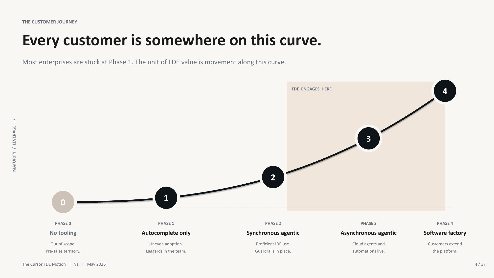
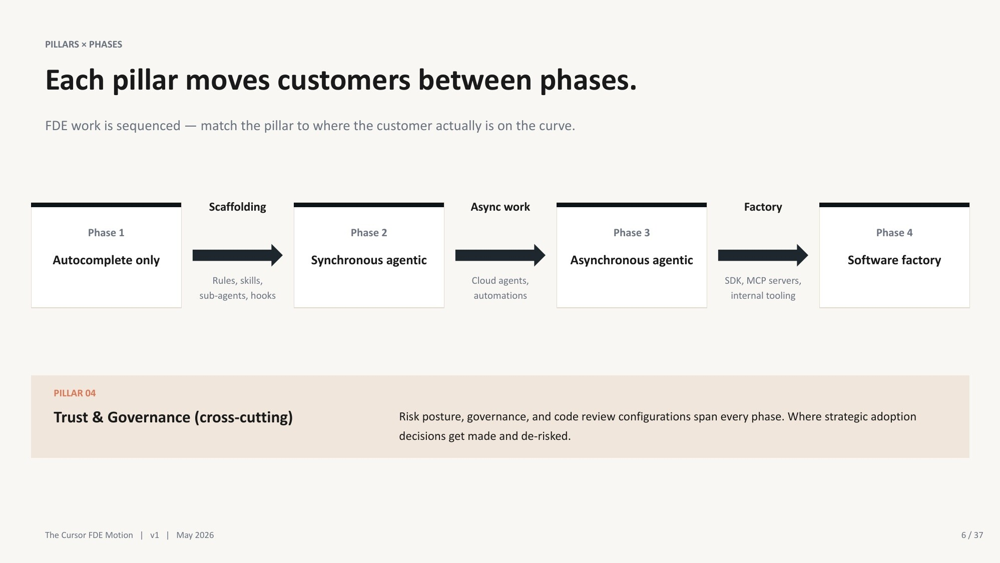
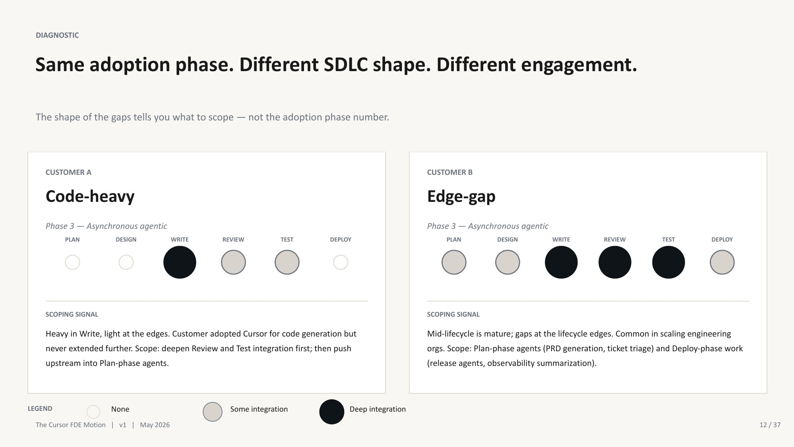
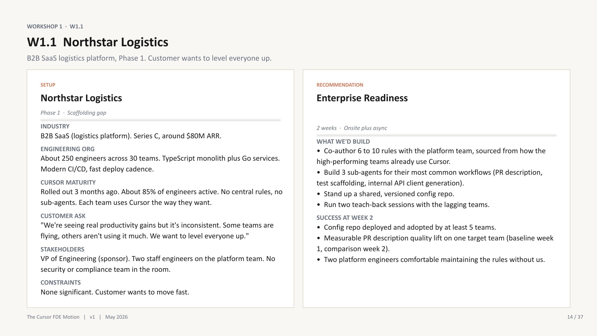

Представьте, Вы — Senior Forward Deployed Engineer. Вы работаете с компанией Meridian Health. Исходные данные компании таковы:
- 4000 инженеров
- Adoption Cursor-а (ну или другого AI-coding агента) достиг 60% за первый месяц, но в последующие 5 месяцев цифры адопшена больше не росли
- PR velocity не растет
- При этом CTO очень хочет показать совету директоров рабочих cloud agents буквально через месяц
- 15 синьор инженеров в компании хотят доступ к SDK
- В компании уже есть concerns от секьюрити, из-за доступа агентов к проду
И что в таком случае должен сделать опытный FDE? Помочь с ожидаемыми клауд агентами или SDK платформой? Или все же поставить под сомнение необходимость этих внедрений, потому что у компании все еще нет общей системы конфигураций, нет реальных улучшений workflow, а ботлнек по части код ревью после внедрения cloud agents станет еще серьезнее?
Несколько недель назад, в рамках партнерства нашей компании Exadel и Anysphere Cursor я проходил тренинг на Cursor FDE Bootcamp. И я думал, что он с большего будет о навороченных техниках имплементации AI в продуктах. Хотя первое же упражнение было о том, что делать не стоит.
И вот на этом месте я немного завис. Когда идешь на bootcamp от Cursor, в голове сама собой рисуется программа про агентов, rules, SDK и сложные интеграции. Но первый серьезный вопрос оказался не «как это построить?», а «нужно ли это вообще сейчас строить?». Для меня именно здесь bootcamp перестал быть просто product training и стал больше похож на systems engineering вокруг людей, процессов и реальных ограничений бизнеса.
Как в примере выше, у кастомера была проблема не с наличием рабочих АИ агентов, у них была проблема с адопшеном технологии в процессы. Количество незакрытых PR в примере выше не уменьшилось бы с внедрением автономных агентов, а демо для боссов техническо было бы реальным, но организационно было бы просто фейком.
Ключевой вывод
Первый важный скил FDE — это не строить системы быстро, а не строить быстро что-то на самом деле не нужное.
Мне этот вывод понравился именно потому, что он немного неприятный. Инженеру гораздо проще сразу начать рисовать архитектуру, выбирать инструменты и думать, как все это зашипить. Так быстро появляется ощущение прогресса. Сказать же клиенту, что его запрос преждевременный, а красивое demo ничего не докажет, намного сложнее. Тут уже мало уметь хорошо кодить: нужно разобраться в чужих процессах и быть готовым сломать простую и красивую картинку ради более честного результата.
И чтобы определить, почему «Нет» может быть наиболее технически верным ответом, мы должны взглянуть на то, что FDE на самом деле должен создавать.

AI adoption is a progression from isolated tool use to a customer-owned software factory. The FDE's job is to create sustainable movement, not activity inside one phase. Source: Cursor FDE Bootcamp v1, May 2026.
FDE — это Adoption Engineer, это не тот человек, который придет в компанию, внедрит новые модные технологии и покажет красивые демо. Его артефакты — это не новый продукт, это «customer's new capabilities», способности и возможности клиента эффективно использовать и поддерживать новую технологию самостоятельно, после вас.
Для меня это, наверное, и было главным сдвигом в понимании роли. Раньше я бы в первую очередь смотрел на саму имплементацию: проходит ли happy path, учтены ли edge cases, можно ли уверенно показать результат. После bootcamp к этому добавился еще один вопрос: а что останется у клиента, когда FDE уйдет? Если ответ сводится к репозиторию с кодом и записи финального demo, то имплементация, возможно, закончена. Но задача FDE еще не обязательно выполнена.
FDE объединяет несколько ролей:
- Discovery: изучить воркфлоу на проекте/глобально в компании, и найти те, где внедрение AI может принести реальное, измеримое value.
- Sequencing: решить, какую из новых capabilites организация сможет поддерживать самостоятельно.
- Engineering: полноценная рабочая имплементация, то что мы можем зашипить за недели, не за месяцы!
- Governance: разработать permissions, аудит, quality гейты, и что важно! — shutdown conditions (не всегда все получается с первого раза, должны быть четкие критерии и план, как мы можем остановить автоматизацию, вернуть ручной flow или старую детерминированную автоматизацию, как мы можем доработать скоуп и улучшить наш процесс после отключения)
- Change management: стройте продукт и процессы вместе с внутренними инженерами компании, постарайтесь поменять скептиков в контрибьютеров.
- Capability transfer: быть уверенным, что клиент сможет сам управлять, модифицировать и улучшать новые процессы.
- Product feedback: определить, какие практики из кастомных клиентских решений стоит превратить в переиспользуемые компоненты продукта
Как видим — здесь есть пересечения и с продукт менеджментом, и с бизнес аналитикой, предстоит много копаться в процессах клиента, общаться со stakeholders, но и классический инжиниринг все так же присутствует.
Так же давайте более предметно сравним задачу FDE с другими ролями. Ведь что для других ролей реальный критерий успеха, для FDE лишь чекпойнт и не финальный результат:
| Роль | Типичный критерий успеха | Почему этого недостаточно для FDE |
|---|---|---|
| Solution Engineering | Демо доказывает, что продукт способен решить задачу | Решение может не выдержать столкновения с реальными workflow и организационной структурой клиента |
| Consulting | Рекомендации и согласованные deliverables подготовлены | Клиент может остаться зависимым от консультанта |
| Staff Augmentation | У клиента стало больше ресурсов для имплементации | Это не обязательно меняет operating model клиента |
| Product Engineering | Выпущена масштабируемая универсальная фича | Она может не решить срочную zero-to-one задачу конкретного клиента (1) |
| Forward Deployed Engineering | Клиент достигает измеримого результата и может самостоятельно воспроизвести этот паттерн | Это и есть целевой результат |
1) zero-to-one problem — это задача, где нужно создать первую работающую версию решения с нуля, когда еще нет готового паттерна, проверенной архитектуры или понятного процесса. Например, клиент понимает бизнес-проблему, но еще не знает, какое AI-решение ему нужно.
И здесь есть еще один важный момент, который я раньше скорее относил к менеджменту, чем к архитектуре. Executive sponsorship тоже является частью архитектуры решения. Можно технически правильно спроектировать cross-team систему, настроить интеграции и даже показать рабочее демо. Но если в компании нет человека с достаточными полномочиями, который может согласовать изменения между командами, назначить владельца процесса и разрешить неизбежные конфликты, то такая система еще не готова. У нее есть код, но нет механизма принятия решений.
По той же причине org chart нужно анализировать не менее внимательно, чем схему инфраструктуры. На scope проекта влияют не только репы, API и network topology. Нужно понимать, где проходят compliance boundaries, кто владеет конкретными системами, какая команда может изменить workflow, а какая может его заблокировать. Иногда главным блокером оказывается не отсутствие технической интеграции, а отсутствие нужного человека на встрече.
Отсюда следует принцип «build with, not for». И это реально один из механизмов production readiness. Если FDE самостоятельно расписал процессы, собрал агентов и настроил автоматизацию, клиент получит рабочее решение. Но после handoff может оказаться, что никто внутри компании не понимает, почему оно устроено именно так, как его поддерживать и что делать при первой серьезной ошибке. Когда же внутренние инженеры участвуют в discovery, спорят с решениями, пишут часть конфигурации и сами проводят финальное демо, мы проверяем не только систему. Мы проверяем способность команды продолжать работу без FDE.
Поэтому перед началом engagement я бы теперь спрашивал не только: «Что мы должны зашипить?». Важнее понять, что нового клиент действительно сможет делать после нашего ухода и кто станет owner-ом этого процесса. Как мы докажем, что изменили реальный workflow, а не просто подготовили красивое демо? И сможет ли команда самостоятельно собрать следующую агентную автоматизацию, используя созданный нами паттерн?
Если на эти вопросы нет понятных ответов, engagement еще рано считать правильно сформулированным. Возможно, решение уже можно начать кодить, но пока непонятно, кто и как будет превращать его в устойчивую capability компании.

Different stages of AI adoption require different engagements: shared scaffolding first, asynchronous work next, and a customer-owned agent platform only after that. Trust and governance apply at every stage. Source: Cursor FDE Bootcamp v1, May 2026.
Две оси диагностики: AI maturity и SDLC shape
Картинка выше дает довольно понятную последовательность развития. Сначала компания приводит в порядок synchronous работу с AI (чаты, кодинг харнесы), затем переносит часть задач в async agents и automations, а уже после этого может строить собственную AI Software Factory. Выглядит почти как roadmap: определили текущую фазу, посмотрели на следующую и выбрали подходящий engagement.
Но одного maturity level для этого недостаточно.
Это был еще один полезный для меня момент из bootcamp. До него я бы, скорее всего, начал оценивать клиента по одной шкале: сколько инженеров используют AI, насколько активно они работают с agents, есть ли общие rules/skills и дошли ли команды до автономных workflow. Такая шкала действительно показывает, насколько сложное решение организация способна поддерживать. Но она почти ничего не говорит о том, где именно AI принесет наибольшую пользу.
Две компании могут иметь одинаковые 70% adoption и находиться примерно на одной maturity phase. При этом одной нужен AI-assisted code review, потому что именно там неделями стоит работа. У другой review уже хорошо автоматизирован, зато planning и deployment остались полностью ручными. Формально maturity одинаковая. Реальный scope будет разным.
Ось 1: что организация уже способна поддерживать
Первая ось показывает не количество купленных лицензий, а реальную зрелость рабочих процессов. Условно ее можно разложить так:
- AI почти не встроен в ежедневную разработку.
- Инженеры используют autocomplete, а несколько power users экспериментируют каждый по-своему.
- Появляется нормальная synchronous agentic development: общие rules и skills, повторяемые паттерны, review практики и понятные guardrails.
- Команды готовы передавать ограниченные задачи в async agents и automations.
- У компании есть люди и процессы, способные владеть внутренней Agents Platform и развивать ее без постоянной внешней помощи.
Здесь легко попасть в ловушку активных seats. Если 80% инженеров хотя бы раз в неделю открывают Cursor, это еще не означает, что компания находится на четвертом пункте. Возможно, половина использует его как более умный autocomplete, несколько сильных инженеров построили свои локальные rules и активно упрощают свою работу скилами, а остальные команды даже не знают об их существовании.
Поэтому вопрос «сколько людей использует AI?» сам по себе слабый. Гораздо интереснее спросить: используют ли разные команды одни и те же проверенные практики? Где лежат rules и кто их меняет? Есть ли общие quality gates? Могут ли инженеры объяснить, почему агенту разрешено выполнять одни действия и запрещено выполнять другие? И кто будет разбираться с автоматизацией, если через месяц она начнет давать плохой результат?
Эта ось отвечает на вопрос: какую сложность организация сможет переварить и поддерживать после handoff?
Ось 2: где именно AI встроен в SDLC
Вторая ось раскладывает разработку по lifecycle:
Здесь мы смотрим уже не на общую зрелость, а на форму внедрения AI. В каких стадиях он реально участвует? Где есть измеримый эффект? Где работа все еще ждет человека? Где ускорение предыдущего этапа просто создало очередь на следующем?
Например, команда может очень быстро генерировать код, но 4-5 дней ждать review. Добавить ей еще больше coding agents означает ускорить уже быструю часть процесса и увеличить существующий bottleneck. Другой клиент может хорошо автоматизировать review и tests, но тратить дни на подготовку design docs или ручной deployment. Ему нужен совсем другой первый use case.

The same adoption maturity does not imply the same engagement. Customers at the same stage can have completely different gaps across the SDLC. Source: Cursor FDE Bootcamp v1, May 2026.
Вот какой набор вопросов я бы теперь использовал на discovery:
| Вопрос | Что может скрываться за слабым ответом | Куда смотреть дальше |
|---|---|---|
| Чем работа лучших AI-пользователей отличается от остальных команд? | В компании нет общего operating pattern | Scaffolding / Enterprise Readiness |
| На каком этапе задача проводит больше всего времени в ожидании? | Bottleneck находится после генерации кода | Review, testing или другая SDLC integration |
| Какая ошибка агента будет самой дорогой? | Нет risk model и подходящих evals | Governance и evaluation design |
| Кто может изменить процесс сразу для нескольких команд? | У проекта нет достаточных полномочий | Продолжить discovery до implementation |
| Кто будет owner-ом через месяц после handoff? | Решение останется зависимым от FDE | Не начинать rollout, пока ownership не определен |
Мне нравится этот фреймворк тем, что он быстро ломает слишком общие запросы вроде «мы хотим больше AI» или «давайте внедрим агентов во всю разработку». После нескольких вопросов становится видно, что именно компания умеет поддерживать, где находится реальная проблема и кто способен довести изменение до прода.
Можно сформулировать кратко: maturity определяет, что организация сможет удержать, а SDLC shape показывает, куда имеет смысл вмешиваться.
Если посмотреть только на первую ось, легко выбрать слишком сложную технологию. Если только на вторую — можно правильно найти bottleneck, но построить решение, к которому компания еще не готова.
И отсюда следует не самый приятный для любителей автономных агентов вывод. Большинству компаний, которые просят Cloud Agents, сначала нужен нормальный scaffolding. Иначе агенты не исправят различия между командами, отсутствие ownership и слабые review practices. Они просто начнут воспроизводить все это быстрее.
Scaffolding before autonomy
Чтобы это не звучало как очередной совет в духе «сначала наведите порядок», посмотрим на один из сценариев воркшопа с FDE Bootcamp. Это именно учебный кейс, а не публичная история реального клиента, но мне он понравился своей реалистичностью.
Northstar Logistics: около 250 инженеров в 30 командах, Cursor развернули три месяца назад, active usage показывает примерно 85%. На слайде это выглядит почти как успешный rollout. Можно переходить к Cloud Agents, правда?
Но внутри компании нет центральных rules, skills, нет общих sub-agents и нет versioned configuration repository. Каждая команда использует Cursor по-своему. Где-то сильные инженеры уже собрали хорошие практики, а где-то инструмент остается дорогим autocomplete. Усредненная метрика в 85% скрывает эту разницу довольно неплохо.
Вместо Cloud Agents для такого клиента предлагается двухнедельный Enterprise Readiness engagement:
- Найти команды, которые уже получают от Cursor заметную пользу, и посмотреть, что именно они делают иначе
- Вместе с их инженерами оформить 6–10 high-leverage rules
- Собрать несколько узких sub-agents, например для PR description, test scaffolding и генерации internal API clients
- вынести конфигурацию в shared, versioned repository
- провести teach-back sessions
- оставить минимум двух platform engineers, которые смогут менять rules без FDE

Workshop scenario: high seat activity without shared scaffolding is still an early-stage adoption problem. A bounded engagement creates shared patterns, ownership, and measurable workflow change. Source: Cursor FDE Bootcamp v1, May 2026.
Здесь мне особенно понравился подход к rules. Их не предлагает написать FDE, сидя отдельно со своим списком бест практик. Сначала нужно найти внутренние команды, у которых уже что-то работает, и вытащить паттерны из их реального workflow. FDE помогает эти паттерны увидеть, проверить, оформить и распространить. Но их авторами и будущими owners остаются инженеры клиента.
Иначе получится знакомая история. В репозитории появится красивый набор rules, который формально можно показать на финальном demo. Через месяц половина из них устареет, некоторые начнут конфликтовать с реальными процессами... А менять их никто не решится, потому что никто внутри компании не понимает исходных решений. Технический артефакт останется. Новая capability у клиента не появится.
Есть здесь и еще одна ловушка: слишком удобные success metrics. В initial proposal было «улучшить качество PR descriptions». Но что это значит и кто решает, что description стал лучше? Такую метрику легко объявить успешной после пары красивых примеров.
Гораздо полезнее смотреть на review turnaround, процент PR, которые проходят first review без возврата, adoption среди целевых команд и contributions в configuration repository от самих инженеров клиента. Пять команд из тридцати — это хороший старт, но еще не успешный rollout на всю компанию. Поэтому нужен «named engineering leader», который продолжит распространение после завершения нашего engagement.
И да, скептический взгляд здесь тоже нужен. Если синьор со стороны кастомера говорит, что Cursor делает джунов хуже, самый простой вариант — это, конечно, списать это мнение на сопротивление новым изменениям. Но в его наблюдении может быть и зерно истины: джуны используют агентов без общих rules, review patterns и guardrails. Поэтому я бы не убирал такого человека из рабочей группы. Я бы попросил его помочь написать один из стандартов и потом вместе проверить, стало ли лучше.
Scaffolding в таком виде уже не выглядит как подготовительная работа ради галочки. Это способ взять хорошие локальные практики нескольких power users и превратить их в общую engineering system, которой компания действительно владеет.
Как проверить readiness до запуска async agents
После bootcamp мой checklist выглядел бы примерно так:
- Есть ли общие практики? Не набор локальных команд у трех энтузиастов, а rules, skills и sub-agents, которые реально используют разные команды.
- Где они хранятся? Конфигурация должна быть versioned, reviewable и иметь понятный contribution flow.
- Кто owner? Должен быть конкретный engineering leader и инженеры, которые могут менять систему без FDE.
- Есть ли baseline? До automation нужно знать текущий review time, объем ручной работы, defect rate или другую метрику, которую мы собираемся изменить.
- Определены ли quality gates и permissions? Команда должна понимать, что агент может делать сам, где требуется human-in-the-loop и при каких результатах automation нужно остановить.
- Участвуют ли скептики? Если самые уважаемые senior engineers остались за пределами rollout, их возражения вернутся позже, только уже после внедрения.
- Выдержит ли downstream процесс новый throughput? Больше сгенерированного кода не поможет, если review, tests или deployment уже забиты.
- Что произойдет после handoff? Кто разберет инциденты, обновит практики и обучит следующую команду?
Я бы не требовал идеального ответа на каждый вопрос. Enterprise systems вообще редко бывают идеально готовы к чему-либо. Но если почти везде ответ — «потом разберемся», Cloud Agents просто сделают это «потом» дороже!
Вместо заключения: сначала capability, потом autonomy
Вернемся к Meridian Health из начала статьи. CTO хочет показать совету директоров Cloud Agents, senior engineers просят SDK, deadline уже близко. Технически FDE, вероятно, сможет собрать демо. Но оно докажет только то, что один agent один раз отработал на одном выбранном репо.
Оно не докажет, что 4 000 инженеров готовы использовать этот паттерн. Не докажет, что security согласовал permissions. Не исправит review cycle в 4–5 дней и не создаст owner-а, который продолжит работу после демо.
Поэтому более сильным результатом первых недель может быть совсем не Cloud Agents. А например, shared configuration repository, созданный вместе с внутренними инженерами, несколько проверенных rules и sub-agents, понятные quality gates и первые команды, которые уже используют этот baseline в реальной работе. Это выглядит менее эффектно на слайде для board meeting. Зато доказывает, что компания стала ближе к безопасному запуску агентов в масштабе.
Главный вывод
Не каждая компания, купившая AI tools, приобрела AI capability. Между лицензией и работающей AI Software Factory лежат общие практики, ownership, governance и довольно много не самой модной инженерной работы.
FDE нужен не для того, чтобы перескочить через эти этапы. Его задача — помочь пройти следующий этап быстрее, но так, чтобы клиент удержал результат после handoff.
В следующей части я хочу перейти от readiness к самим implementation scenarios. Будет множество интересных примеров из воркшопов:
- как выбрать первую automation
- почему overall accuracy может оказаться опасной метрикой
- как заранее определить ошибку агента, после которой automation придется отключить
- и в какой момент клиенту действительно нужен SDK или внутренняя agent platform
Потому что даже после правильной диагностики остается второй шанс все испортить: выбрать самый эффектный use case вместо самого полезного.
Успешного вам опыта интеграций!
Ну и подписывайтесь на мой телеграм канал https://t.me/ai_vs_devops